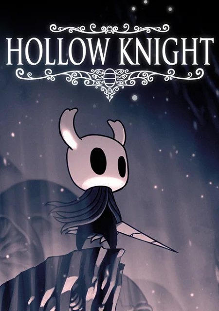
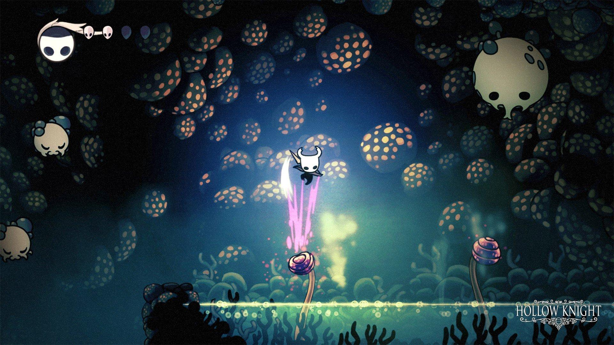
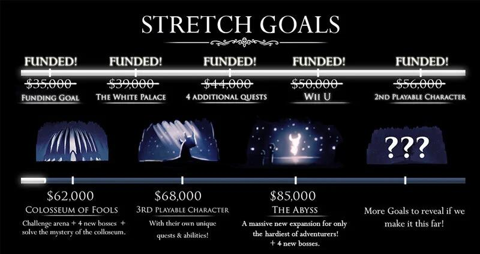
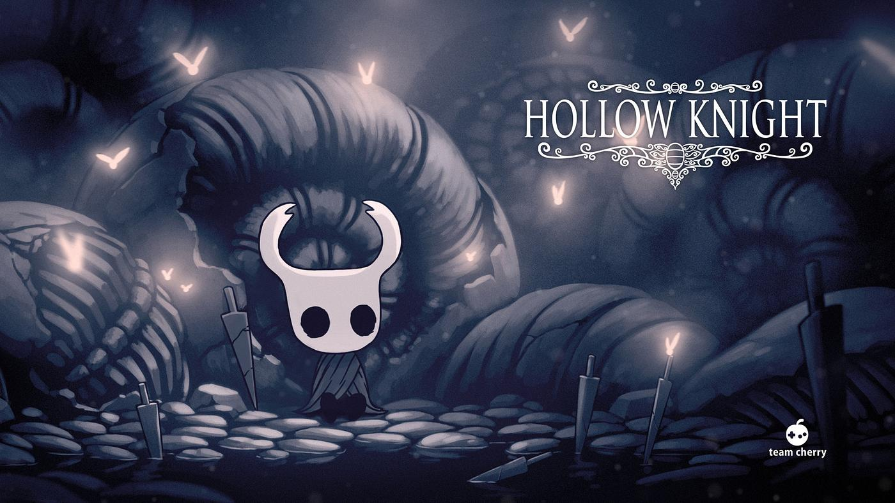
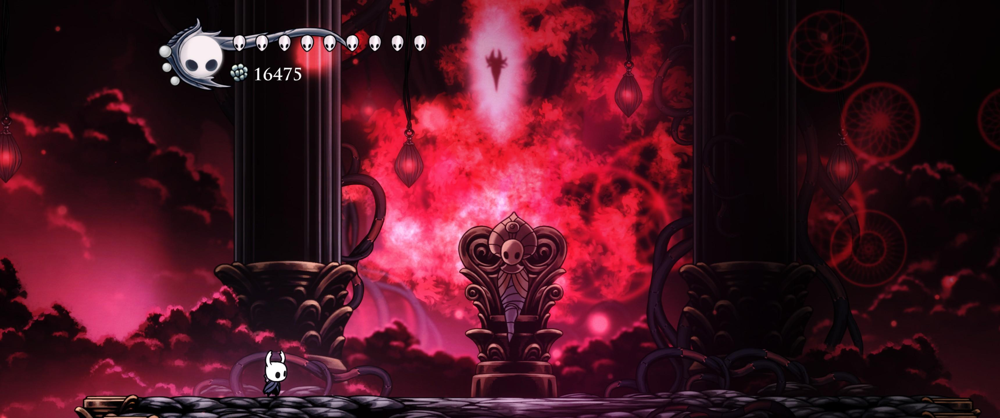

1. Los orígenes de Hollow Knight

Hollow Knight es un videojuego independiente desarrollado por el estudio australiano Team Cherry. Su creación comenzó mucho antes de su lanzamiento oficial y fue el resultado de varias ideas, experimentos y proyectos pequeños que ayudaron a sus creadores a desarrollar el estilo que posteriormente caracterizaría al juego.
Team Cherry está formado por Ari Gibson, William Pellen y Jack Vine. Sus integrantes compartían el interés por los videojuegos clásicos de aventura, especialmente aquellos que permitían explorar grandes escenarios, descubrir secretos y superar desafíos. Entre sus inspiraciones se encontraban títulos como Zelda II: The Adventure of Link y Faxanadu.
Antes de crear Hollow Knight, algunos de sus futuros desarrolladores participaron en eventos conocidos como Game Jams. Estos encuentros consisten en crear videojuegos pequeños durante un periodo limitado, normalmente siguiendo un tema determinado. Gracias a estas experiencias comenzaron a experimentar con personajes, mecánicas y estilos visuales.
2. Hungry Knight: el primer paso
Uno de los antecedentes más importantes de Hollow Knight fue Hungry Knight, un videojuego creado en 2013 para la competición Ludum Dare 27. En su desarrollo participaron William Pellen, Ari Gibson y Rohan Fraser. El proyecto fue realizado utilizando Stencyl y tenía una estructura mucho más sencilla que la del juego que llegaría años después.
Hungry Knight presentaba a un pequeño personaje con una máscara blanca, cuernos y una capa. El jugador debía recorrer un escenario, enfrentarse a enemigos y conseguir alimento para mantener con vida al protagonista. La temática del evento era "10 segundos", por lo que el juego incorporaba una barra de hambre que funcionaba como una cuenta regresiva. Si el jugador no conseguía alimento dentro del tiempo establecido, la partida terminaba y debía comenzar nuevamente.
Aunque Hungry Knight era un proyecto sencillo, tuvo una importancia especial para el futuro de Team Cherry. Su protagonista ya mostraba características visuales muy parecidas a las del Caballero de Hollow Knight. Se pueden reconocer elementos como su cabeza blanca, sus cuernos y el objeto que lleva en la espalda. De esta manera, el pequeño proyecto sirvió como antecedente para desarrollar uno de los personajes más reconocibles del videojuego independiente.
3. El nacimiento de la idea de Hollow Knight
Después de experimentar con Hungry Knight, sus desarrolladores comenzaron a imaginar una aventura mucho más grande. Una idea importante surgió a partir del tema "Beneath the Surface", propuesto para otro evento de creación de videojuegos a mediados de 2014. Aunque el equipo no logró terminar el proyecto dentro del tiempo establecido, continuó trabajando con aquella idea.
El concepto consistía en controlar a un pequeño explorador que descendía cada vez más profundamente hacia un misterioso mundo subterráneo. A partir de esa propuesta nació la idea de Hallownest, un antiguo reino habitado por insectos, con diferentes ciudades, cavernas, caminos ocultos y lugares abandonados.
El proyecto fue creciendo hasta convertirse en un videojuego de exploración y aventura. Los creadores querían que los jugadores pudieran recorrer el mundo libremente, descubrir nuevos caminos, encontrar personajes y regresar a lugares anteriores después de conseguir nuevas habilidades.

4. La campaña de Kickstarter y el desarrollo
El 19 de noviembre de 2014, Team Cherry presentó oficialmente Hollow Knight mediante una campaña de financiación colectiva en Kickstarter. El objetivo inicial era conseguir aproximadamente 36.000 dólares australianos para continuar con el desarrollo.
La campaña recibió el apoyo de miles de personas interesadas en el proyecto. Finalmente consiguió alrededor de 57.000 dólares australianos gracias a más de 2.100 patrocinadores. Este apoyo permitió ampliar las ideas originales y trabajar en nuevas zonas, personajes y características del videojuego.
Durante el desarrollo también se incorporaron colaboradores importantes. David Kazi participó en el área técnica y Chris Larkin fue responsable de la música y el diseño de sonido. La banda sonora ayudó a construir la atmósfera misteriosa y melancólica que caracteriza a las diferentes regiones de Hallownest.
El equipo trabajó en los escenarios, las animaciones, los enemigos y las mecánicas de movimiento del protagonista. También se dedicó especial atención a la exploración, procurando que cada región tuviera su propia identidad y que los jugadores sintieran curiosidad por descubrir lo que se encontraba más allá de cada camino.

5. El lanzamiento y la evolución del videojuego
Después de varios años de trabajo, Hollow Knight fue lanzado oficialmente el 24 de febrero de 2017 para computadoras. Posteriormente llegó a otras plataformas, incluyendo Nintendo Switch, PlayStation 4 y Xbox One. Su mundo, su estilo artístico y su propuesta de exploración consiguieron atraer a una gran comunidad de jugadores.
Después del lanzamiento, Team Cherry continuó ampliando el contenido mediante actualizaciones gratuitas. Entre las expansiones más conocidas se encuentran Hidden Dreams, The Grimm Troupe, Lifeblood y Godmaster. Estas incorporaron nuevos desafíos, personajes, jefes, música y otras características que enriquecieron la experiencia.
Con el paso del tiempo, Hollow Knight también recibió mejoras técnicas, correcciones de errores y ajustes en su funcionamiento. De esta manera, el equipo mantuvo el videojuego actualizado incluso después de haber terminado su desarrollo principal.

6. La última versión y las actualizaciones recientes
Según los anuncios oficiales de Steam consultados hasta noviembre de 2026, una de las actualizaciones más recientes anunciadas para Hollow Knight es la versión 1.5.12620, publicada el 26 de marzo de 2026.
Esta actualización incorporó la traducción al chino tradicional y corrigió diferentes problemas relacionados con el sonido, la interfaz, los enemigos, los registros del diario y algunas animaciones y comportamientos del juego. También incluyó mejoras de rendimiento y pequeñas correcciones generales.
Antes de ella, la versión 1.5.12459, publicada en febrero de 2026, incorporó compatibilidad con resoluciones de pantalla 21:9 y 16:10, mejoras en el movimiento del mapa y cambios en el sistema de controles. Estas actualizaciones demuestran que el juego continuó recibiendo mantenimiento técnico años después de su lanzamiento original.

7. El legado de Hollow Knight
La creación de Hollow Knight representa el crecimiento de una pequeña idea hasta convertirse en un proyecto reconocido internacionalmente. Su historia demuestra cómo un videojuego sencillo como Hungry Knight pudo servir de punto de partida para desarrollar un mundo mucho más amplio y detallado.
El trabajo de Team Cherry destacó por combinar exploración, diseño artístico, música y una ambientación que invita a descubrir cada rincón del reino. Su desarrollo también demuestra la importancia de la creatividad, la perseverancia y el apoyo de una comunidad durante la creación de un proyecto independiente.
Desde sus primeros experimentos en 2013 hasta las actualizaciones técnicas más recientes, Hollow Knight ha mantenido su identidad y se ha convertido en una obra importante dentro de los videojuegos independientes.